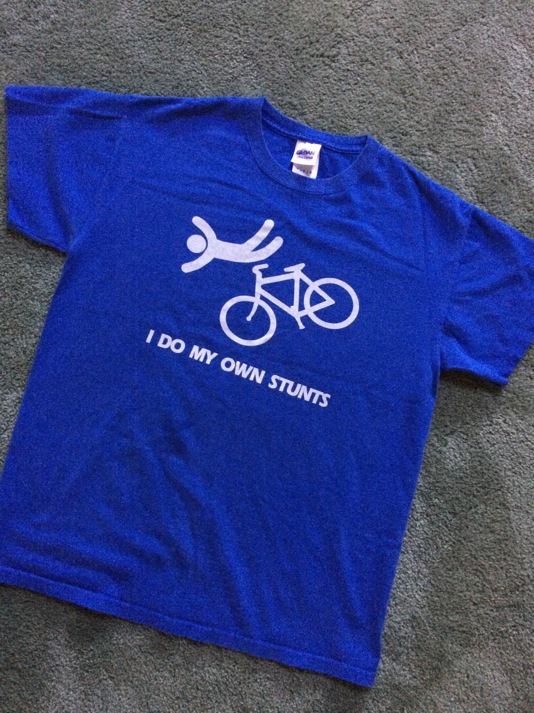

I am a person who loves to travel! But being one of 12 children (which gives me 11 siblings)
and having 4 children of my own, leaves time a lost commodity. Take it from me,
the more family you have, the busier you are. Which of course is a blessing but doesn't allow for a lot
of free time! Now, add a career to the mix and POOF, limited to no time left. On the other hand, as you
all know, traveling is not cheap. So, the career is necessary. Oh, the old adage, "so much to do, with
such little time".
So, I created a bucket list & it started as:
- Alaska
- Maine
- Africa
- Australia
Sure, it's small but doable. In fact, I've been knocking it out!!!
So, where have I been? What has been eliminated from the list?
Alaska
I HAVE been to Alaska. Alaska is unique and quaint. Quaint in the sense that people and neighbors are appreciated.
Odd for a state that is sooo large. I went crabbing and ate the crab afterwards, yum yum. Walked
on a glacier! Came back and went to a salmon bake. Lovely people and lovely place. The natural beauty
is exquisite. There are visions one can only find in Alaska. Alaska possesses this vibe that living
off the land is customary. This is a very interesting place.


Maine
I HAVE been to Maine. Maine is beautiful and I loved it! I went sailing, not only as a passenger,
but as a deck hand! Light houses are everywhere in Maine and exploring them
was fascinating. The locals raved about steam pot clams so, I tried them, they were a little too
muddy tasting form me. However, I love lobster and was on a mission to eat it for every meal.
And what better place than Maine for lobster? I ate lobster in every way possible. In the process,
I learned my husband hates lobster. Oh well, more for me.


Australia
I have NOT been to Australia but it has been kicked off my list. Too many things can kill you there!


Africa
Africa is the place that is still on my list. Sure, it too sounds dangerous,
but I would love to go on a safari. I have saved this for last for two reasons,
first, it is going to be expensive and second, I have to talk my husband into it. Stay tuned,
pictures to come. . .
Mmmm,
Does anyone see a theme here - food seems to be very significant. Maybe I should add the Miami Food
Festival to my Bucket List!!!!!!
The Bucket List, ever changing. Life, as they say, is too short. And of course, there is
the money thing! Requires lots and lots $ and ¢!

Words of advice while traveling, DON'T do your own stunts!